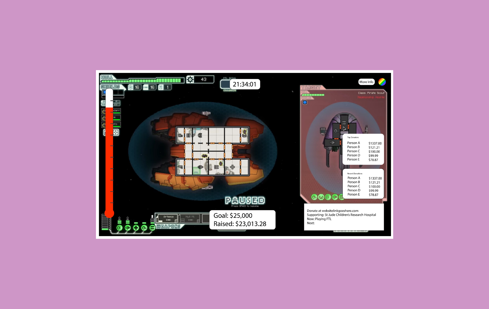
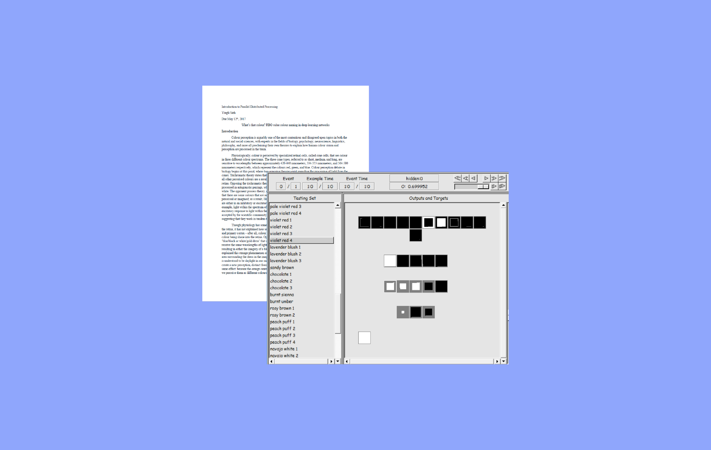

Yingli Sieh
Researcher | Designer | Innovator

I worked at Folia Water as their Microbiological Lab Associate, managing the lab materials and creating new protocols to match World Health Organization guidelines, as well as running tests against the current model of Folia Filters to ensure effectiveness of the product.
Click the title for more information.

A team of four, including myself, are developing a Twitch Extension to support the dissemination of data from philanthropic streams and charity donations to the average viewer. My role in this project has been in the design of the features and overall appearance of the Extension, which functions as an overlay on top of a streaming video. The design has gone through paper and digitial prototyping, and I have conducted a series of playtests and usability testing for the product.
Click the title for more information.

I have worked as a part of Carnegie Mellon Residential Education as a Resident Assistant in Mudge House (2016-2017 school year, first-year dorm) and Roselawn Terrace (2017-2018 school year, upperclassmen apartments).
Click the title for more information.

In this project, I developed a series of neural networks that sought to label colors based on their RGB values. Each network was trained on a variety of different inputs (families of colors, or groups of colors to simulate the color wheel) and were then tested against groups of target colors and evaluated for overall correctness, accuracy per trial, and for speed. Results were gathered for each network and presented in the form of a research paper.
Click the title for more information.

During undergraduate career I have had opportunities in my work as a Resident Assistant and in my classes to work on my graphic design skills. Contact me for more examples of posters and other art pieces I have designed.
Click the title for more information.

One of my hobbies is photography, particularly of food, travel, and landscapes. I love bringing my camera with me to capture the art of life around me!
Click the title for more information.